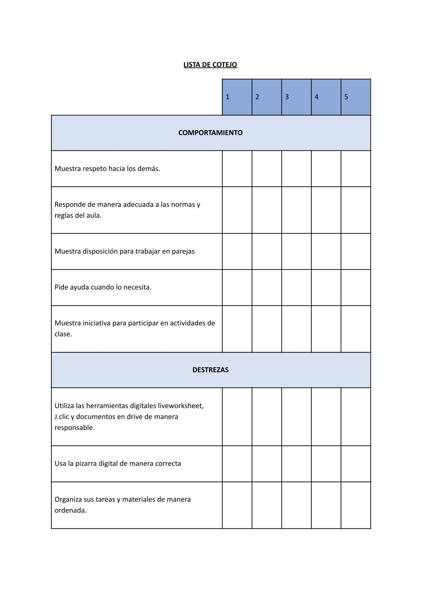
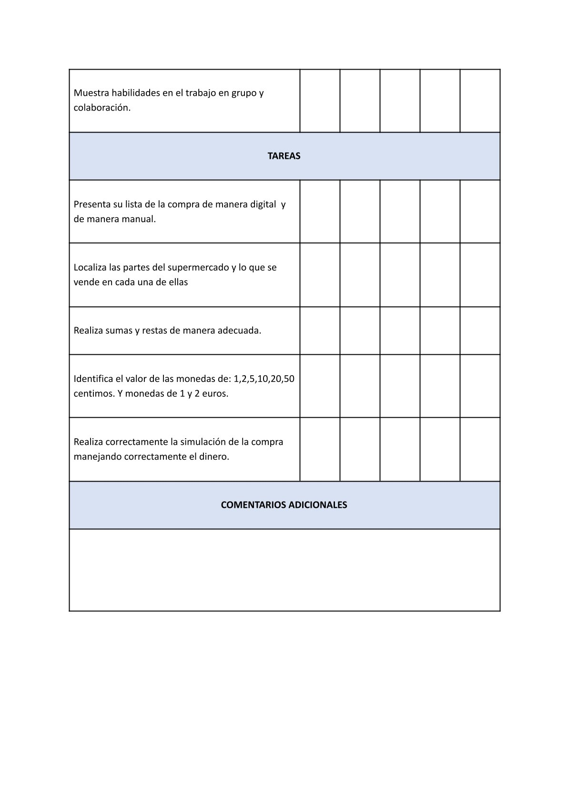
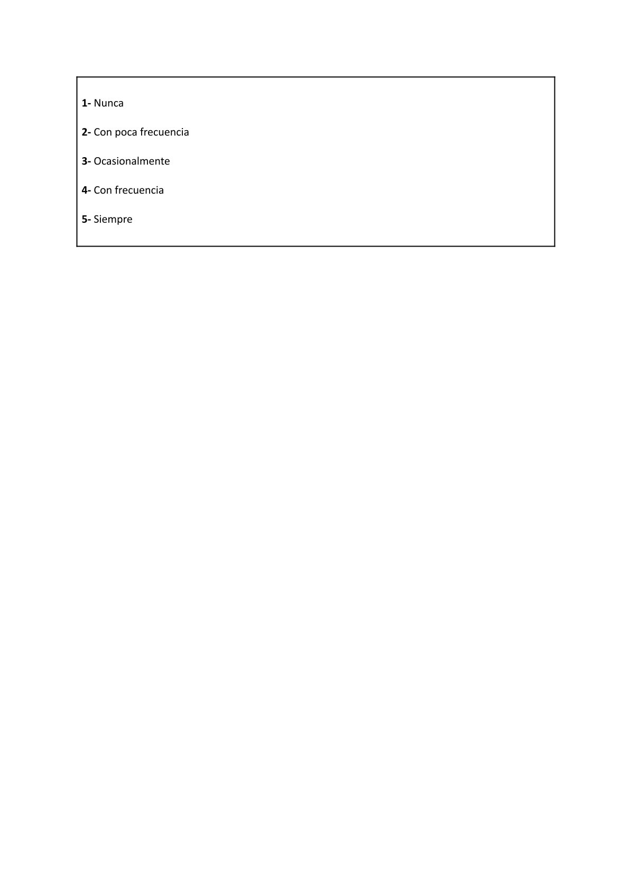

Instrumentos de Evaluación
Para evaluar el desarrollo de competencia de nuestro alumnado en esta SdA, se han elaborado dos instrumentos de evaluación; una lista de cotejo a tener en cuenta en el desarrollo de las sesiones y una diana de evaluación para que el alumnado pueda participar en dicha tarea y evaluar a sus compañeros.
1) Lista de cotejo:



2) Diana de Autoevaluación: